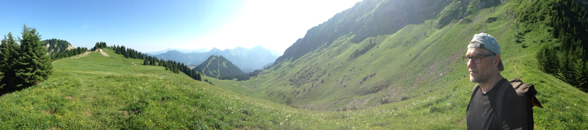

Contact
Adresse
Stéphane CanuINSA Rouen Normandie
Laboratoire LITIS
Bâtiment Bougainville, premier étage, bureau B 101
685 avenue de l’Université
76801 Saint-Étienne-du-Rouvray Cedex
Me joindre
- Courriel scanu [at] insa-rouen.fr
- Téléphone 02 32 95 98 44 ou 02 32 95 98 84
En ligne
